Changes in PRIMAP-hist v2.5.1_final compared to v2.5_final for Taiwan, Province of China
2024-02-29
Johannes Gütschow
Change analysis for Taiwan, Province of China for PRIMAP-hist v2.5.1_final compared to v2.5_final
Overview over emissions by sector and gas
The following figures show the aggregate national total emissions excluding LULUCF AR6GWP100 for the country reported priority scenario. The dotted linesshow the v2.5_final data.
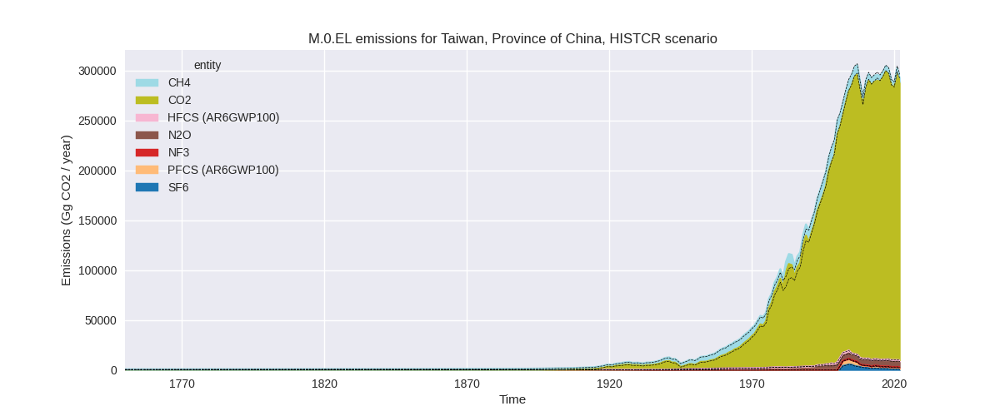
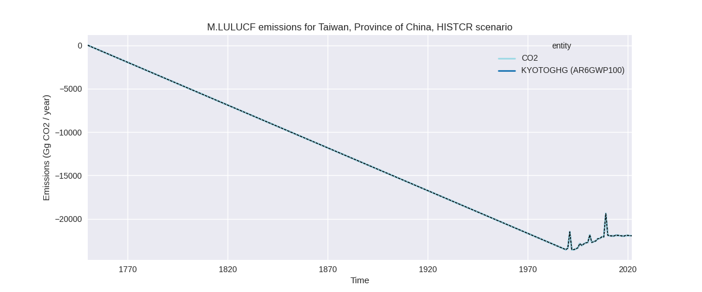
The following figures show the aggregate national total emissions excluding LULUCF AR6GWP100 for the third party priority scenario. The dotted linesshow the v2.5_final data.
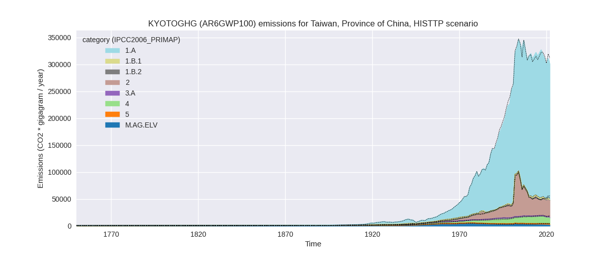
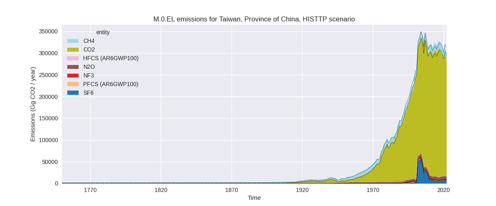
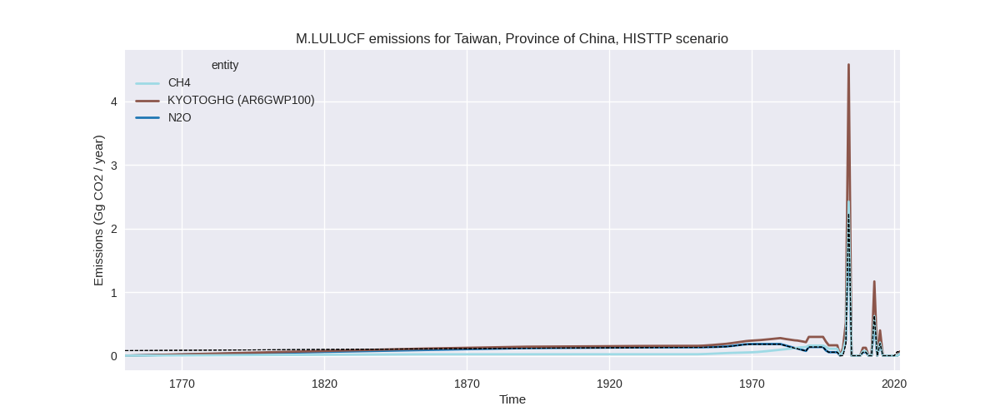
Overview over changes
In the country reported priority scenario we have the following changes for aggregate Kyoto GHG and national total emissions excluding LULUCF (M.0.EL):
- Emissions in 2022 have changed by -1.0%% (-2988.22 Gg CO2 / year)
- Emissions in 1990-2022 have changed by -0.4%% (-1132.65 Gg CO2 / year)
In the third party priority scenario we have the following changes for aggregate Kyoto GHG and national total emissions excluding LULUCF (M.0.EL):
- Emissions in 2022 have changed by -3.4%% (-10627.51 Gg CO2 / year)
- Emissions in 1990-2022 have changed by -1.0%% (-2752.84 Gg CO2 / year)
Most important changes per scenario and time frame
In the country reported priority scenario the following sector-gas combinations have the highest absolute impact on national total KyotoGHG (AR6GWP100) emissions in 2022 (top 5):
- 1: 1.B.1, CO2 with -2451.32 Gg CO2 / year (-86.3%)
- 2: 2, CO2 with -1025.87 Gg CO2 / year (-7.0%)
- 3: 4, CH4 with 871.93 Gg CO2 / year (68.5%)
- 4: 4, CO2 with 195.35 Gg CO2 / year (133.6%)
- 5: 1.B.2, CH4 with -180.39 Gg CO2 / year (-38.9%)
In the country reported priority scenario the following sector-gas combinations have the highest absolute impact on national total KyotoGHG (AR6GWP100) emissions in 1990-2022 (top 5):
- 1: 1.B.1, CO2 with -1077.28 Gg CO2 / year (-48.8%)
- 2: 2, CO2 with -30.63 Gg CO2 / year (-0.2%)
- 3: 4, CH4 with 26.42 Gg CO2 / year (0.4%)
- 4: 1.B.2, CO2 with -21.27 Gg CO2 / year (-99.5%)
- 5: 1.B.2, CH4 with -20.70 Gg CO2 / year (-10.2%)
In the third party priority scenario the following sector-gas combinations have the highest absolute impact on national total KyotoGHG (AR6GWP100) emissions in 2022 (top 5):
- 1: 1.A, CO2 with -3747.01 Gg CO2 / year (-1.5%)
- 2: 1.B.1, CO2 with -2451.32 Gg CO2 / year (-86.3%)
- 3: 2, CO2 with -1376.90 Gg CO2 / year (-6.5%)
- 4: M.AG.ELV, CO2 with -1190.91 Gg CO2 / year (-88.8%)
- 5: 4, CH4 with -1078.12 Gg CO2 / year (-8.6%)
In the third party priority scenario the following sector-gas combinations have the highest absolute impact on national total KyotoGHG (AR6GWP100) emissions in 1990-2022 (top 5):
- 1: 1.A, CO2 with -1817.63 Gg CO2 / year (-0.8%)
- 2: 1.B.1, CO2 with -1077.28 Gg CO2 / year (-48.8%)
- 3: 2, CO2 with 635.81 Gg CO2 / year (3.4%)
- 4: M.AG.ELV, CO2 with -316.93 Gg CO2 / year (-41.8%)
- 5: 1.B.2, CH4 with -116.97 Gg CO2 / year (-17.2%)
Notes on data changes
No country specific notes present for this changelog.
Changes by sector and gas
For each scenario and time frame the changes are displayed for all individual sectors and all individual gases. In the sector plot we use aggregate Kyoto GHGs in AR6GWP100. In the gas plot we usenational total emissions without LULUCF. ## country reported scenario
2022
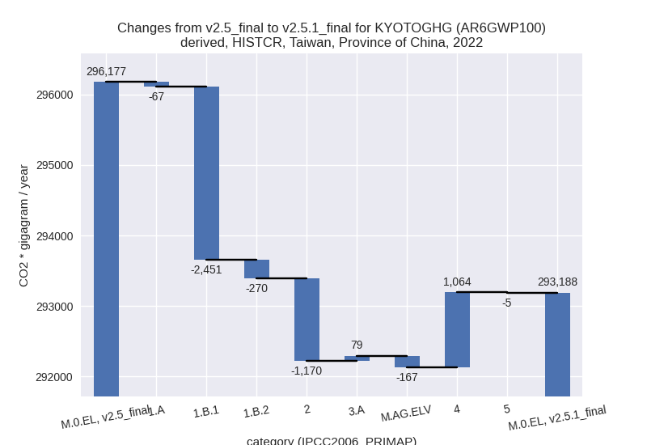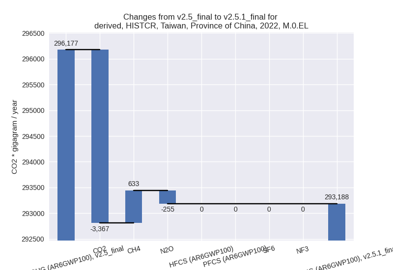
1990-2022
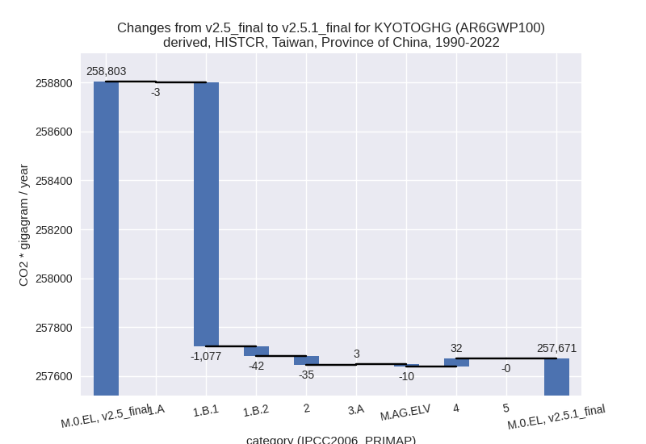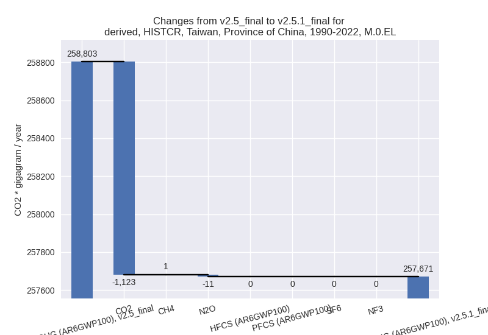
third party scenario
2022
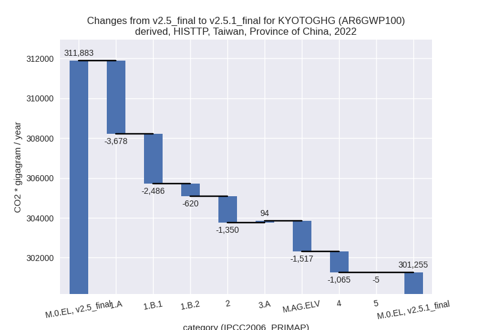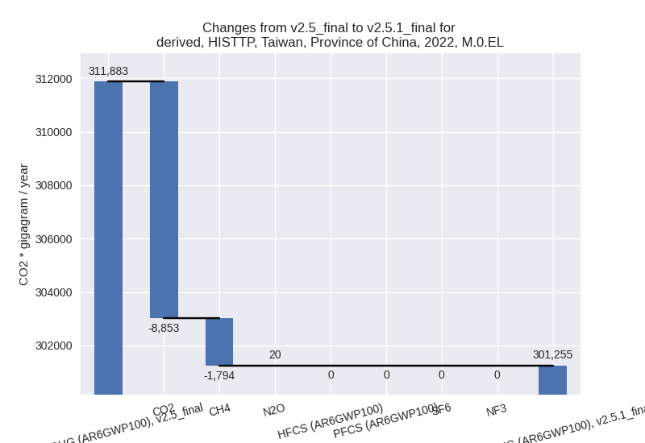
1990-2022
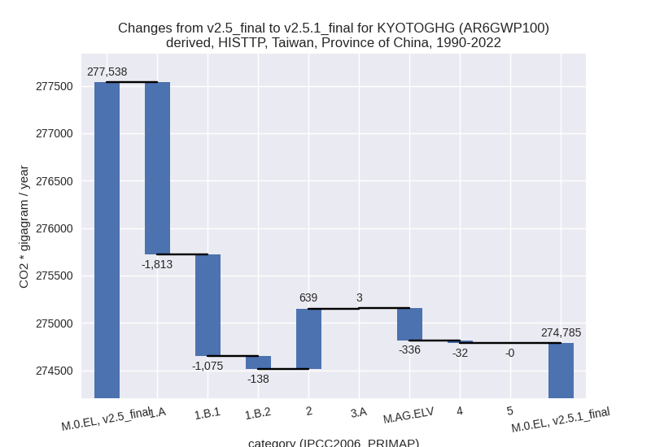
Detailed changes for the scenarios:
country reported scenario (HISTCR):
Most important changes per time frame
For 2022 the following sector-gas combinations have the highest absolute impact on national total KyotoGHG (AR6GWP100) emissions in 2022 (top 5):
- 1: 1.B.1, CO2 with -2451.32 Gg CO2 / year (-86.3%)
- 2: 2, CO2 with -1025.87 Gg CO2 / year (-7.0%)
- 3: 4, CH4 with 871.93 Gg CO2 / year (68.5%)
- 4: 4, CO2 with 195.35 Gg CO2 / year (133.6%)
- 5: 1.B.2, CH4 with -180.39 Gg CO2 / year (-38.9%)
For 1990-2022 the following sector-gas combinations have the highest absolute impact on national total KyotoGHG (AR6GWP100) emissions in 1990-2022 (top 5):
- 1: 1.B.1, CO2 with -1077.28 Gg CO2 / year (-48.8%)
- 2: 2, CO2 with -30.63 Gg CO2 / year (-0.2%)
- 3: 4, CH4 with 26.42 Gg CO2 / year (0.4%)
- 4: 1.B.2, CO2 with -21.27 Gg CO2 / year (-99.5%)
- 5: 1.B.2, CH4 with -20.70 Gg CO2 / year (-10.2%)
Changes in the main sectors for aggregate KyotoGHG (AR6GWP100) are
- 1: Total sectoral emissions in 2022 are 266208.21 Gg CO2 / year which is 90.8% of M.0.EL emissions. 2022 Emissions have changed by -1.0% (-2789.00 Gg CO2 / year). 1990-2022 Emissions have changed by -0.5% (-1122.22 Gg CO2 / year).
- 2: Total sectoral emissions in 2022 are 19840.91 Gg
CO2 / year which is 6.8% of M.0.EL emissions. 2022 Emissions have
changed by -5.6% (-1169.85 Gg CO2 /
year). 1990-2022 Emissions have changed by -0.1% (-35.01 Gg CO2 / year). For 2022 the
changes per gas
are:
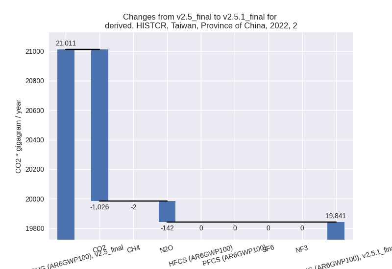 - M.AG: Total sectoral emissions in 2022 are 3245.92
Gg CO2 / year which is 1.1% of M.0.EL emissions. 2022 Emissions have
changed by -2.7% (-88.42 Gg CO2 /
year). 1990-2022 Emissions have changed by -0.2% (-7.52 Gg CO2 / year). For 2022 the
changes per gas
are:
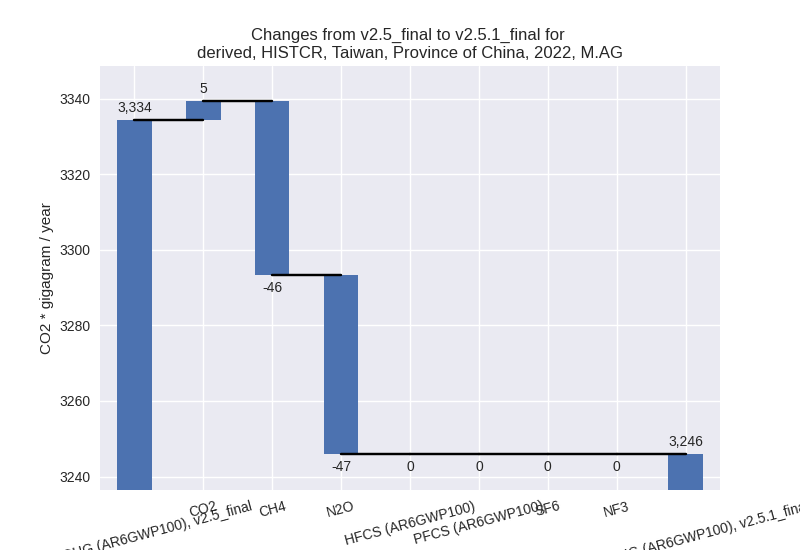
The changes come from the following subsectors:- 3.A: Total sectoral emissions in 2022 are 1630.02
Gg CO2 / year which is 50.2% of category M.AG emissions. 2022 Emissions
have changed by 5.1% (78.67 Gg CO2 /
year). 1990-2022 Emissions have changed by 0.1% (2.80 Gg CO2 / year). For 2022 the
changes per gas
are:
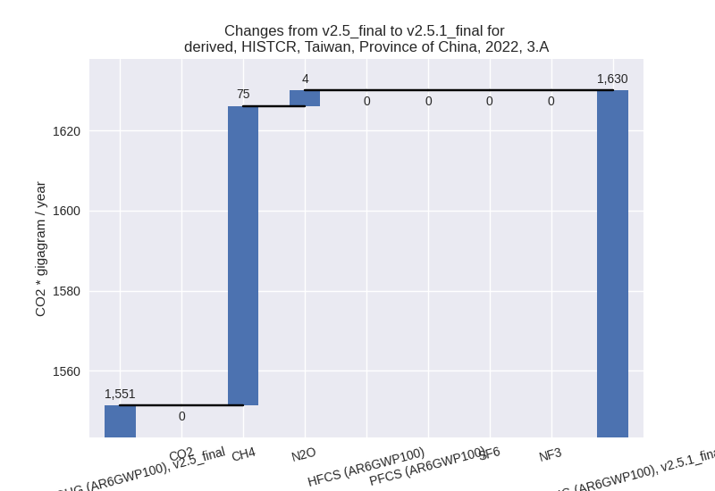
There is no subsector information available in PRIMAP-hist. - M.AG.ELV: Total sectoral emissions in 2022 are
1615.90 Gg CO2 / year which is 49.8% of category M.AG emissions. 2022
Emissions have changed by -9.4%
(-167.09 Gg CO2 / year). 1990-2022 Emissions have changed by -0.4% (-10.31 Gg CO2 / year). For 2022 the
changes per gas
are:
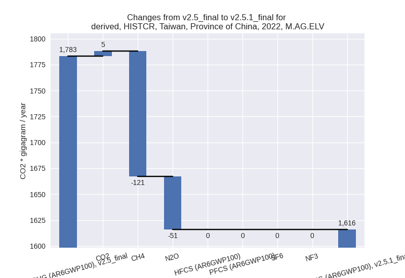
There is no subsector information available in PRIMAP-hist.
- 3.A: Total sectoral emissions in 2022 are 1630.02
Gg CO2 / year which is 50.2% of category M.AG emissions. 2022 Emissions
have changed by 5.1% (78.67 Gg CO2 /
year). 1990-2022 Emissions have changed by 0.1% (2.80 Gg CO2 / year). For 2022 the
changes per gas
are:
- 4: Total sectoral emissions in 2022 are 2843.06 Gg
CO2 / year which is 1.0% of M.0.EL emissions. 2022 Emissions have
changed by 59.8% (1063.91 Gg CO2 /
year). 1990-2022 Emissions have changed by 0.5% (32.24 Gg CO2 / year). For 2022 the
changes per gas
are:
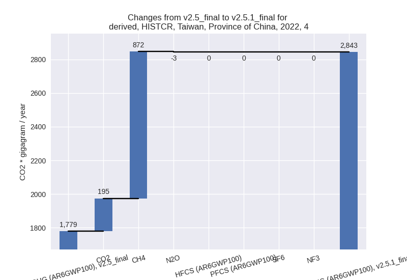 - 5: Total sectoral emissions in 2022 are 1050.41 Gg CO2 / year which is 0.4% of M.0.EL emissions. 2022 Emissions have changed by -0.5% (-4.86 Gg CO2 / year). 1990-2022 Emissions have changed by -0.0% (-0.15 Gg CO2 / year).
third party scenario (HISTTP):
Most important changes per time frame
For 2022 the following sector-gas combinations have the highest absolute impact on national total KyotoGHG (AR6GWP100) emissions in 2022 (top 5):
- 1: 1.A, CO2 with -3747.01 Gg CO2 / year (-1.5%)
- 2: 1.B.1, CO2 with -2451.32 Gg CO2 / year (-86.3%)
- 3: 2, CO2 with -1376.90 Gg CO2 / year (-6.5%)
- 4: M.AG.ELV, CO2 with -1190.91 Gg CO2 / year (-88.8%)
- 5: 4, CH4 with -1078.12 Gg CO2 / year (-8.6%)
For 1990-2022 the following sector-gas combinations have the highest absolute impact on national total KyotoGHG (AR6GWP100) emissions in 1990-2022 (top 5):
- 1: 1.A, CO2 with -1817.63 Gg CO2 / year (-0.8%)
- 2: 1.B.1, CO2 with -1077.28 Gg CO2 / year (-48.8%)
- 3: 2, CO2 with 635.81 Gg CO2 / year (3.4%)
- 4: M.AG.ELV, CO2 with -316.93 Gg CO2 / year (-41.8%)
- 5: 1.B.2, CH4 with -116.97 Gg CO2 / year (-17.2%)
Changes in the main sectors for aggregate KyotoGHG (AR6GWP100) are
- 1: Total sectoral emissions in 2022 are 253205.29
Gg CO2 / year which is 84.1% of M.0.EL emissions. 2022 Emissions have
changed by -2.6% (-6784.10 Gg CO2 /
year). 1990-2022 Emissions have changed by -1.3% (-3026.64 Gg CO2 / year). For 2022
the changes per gas
are:
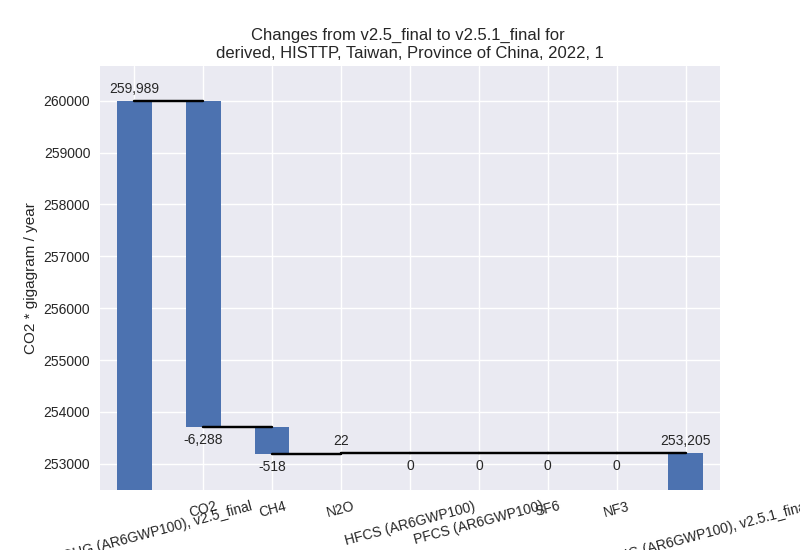
The changes come from the following subsectors:- 1.A: Total sectoral emissions in 2022 are 252150.32 Gg CO2 / year which is 99.6% of category 1 emissions. 2022 Emissions have changed by -1.4% (-3677.85 Gg CO2 / year). 1990-2022 Emissions have changed by -0.8% (-1812.84 Gg CO2 / year).
- 1.B.1: Total sectoral emissions in 2022 are 608.59
Gg CO2 / year which is 0.2% of category 1 emissions. 2022 Emissions have
changed by -80.3% (-2486.37 Gg CO2 /
year). 1990-2022 Emissions have changed by -44.7% (-1075.48 Gg CO2 / year). For 2022
the changes per gas
are:
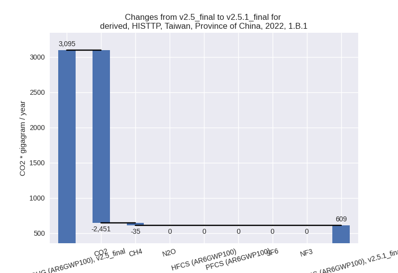
For 1990-2022 the changes per gas are:
There is no subsector information available in PRIMAP-hist. - 1.B.2: Total sectoral emissions in 2022 are 446.39
Gg CO2 / year which is 0.2% of category 1 emissions. 2022 Emissions have
changed by -58.1% (-619.87 Gg CO2 /
year). 1990-2022 Emissions have changed by -19.7% (-138.32 Gg CO2 / year). For 2022
the changes per gas
are:

For 1990-2022 the changes per gas are:
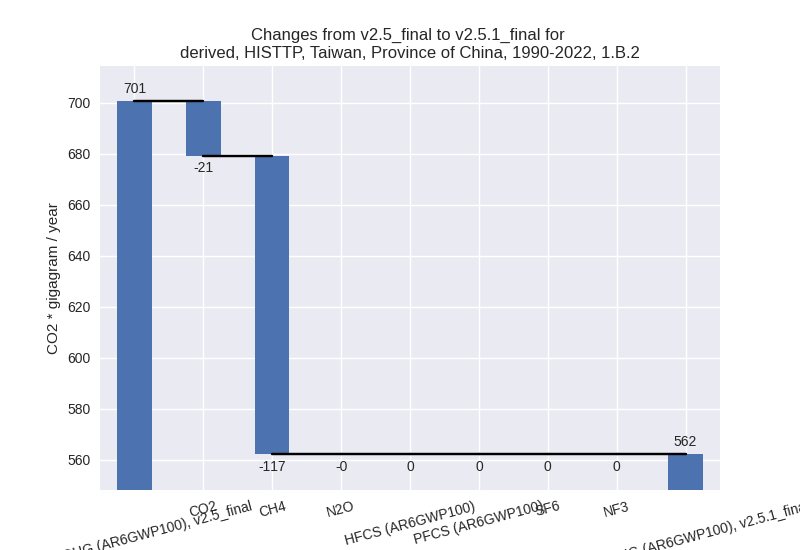
There is no subsector information available in PRIMAP-hist.
- 2: Total sectoral emissions in 2022 are 31083.28 Gg
CO2 / year which is 10.3% of M.0.EL emissions. 2022 Emissions have
changed by -4.2% (-1350.39 Gg CO2 /
year). 1990-2022 Emissions have changed by 1.8% (638.57 Gg CO2 / year). For 2022 the
changes per gas
are:
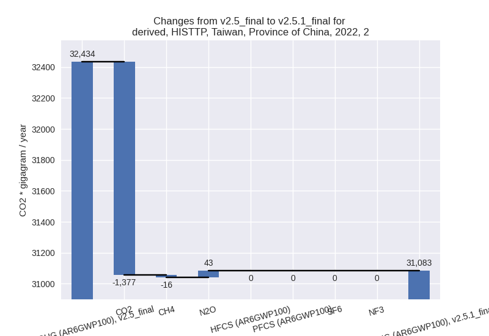 - M.AG: Total sectoral emissions in 2022 are 4149.13
Gg CO2 / year which is 1.4% of M.0.EL emissions. 2022 Emissions have
changed by -25.5% (-1422.73 Gg CO2 /
year). 1990-2022 Emissions have changed by -6.0% (-332.34 Gg CO2 / year). For 2022
the changes per gas
are:
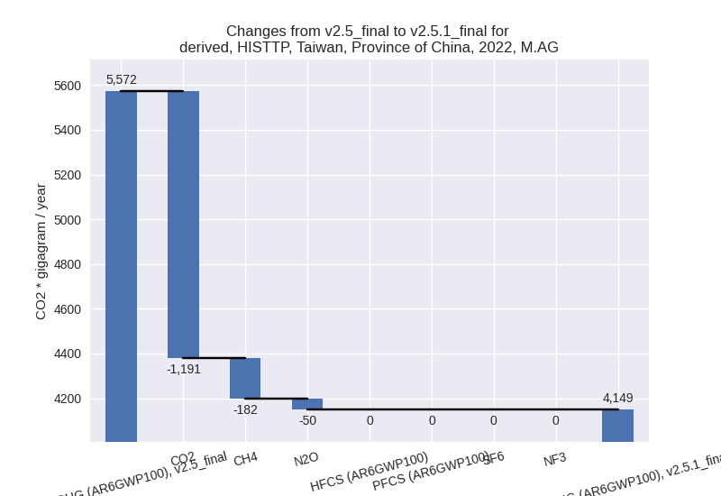
For 1990-2022 the changes per gas are:
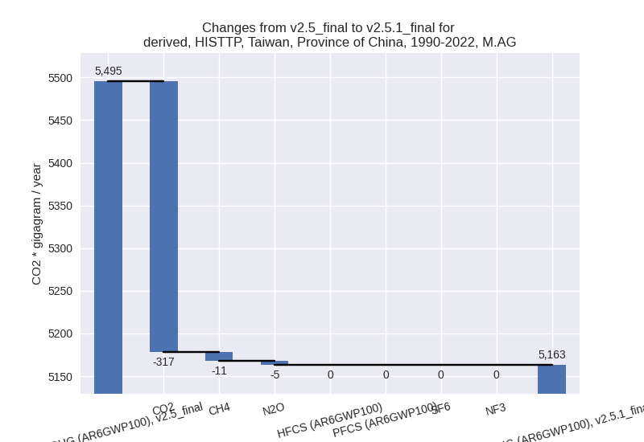
The changes come from the following subsectors:- 3.A: Total sectoral emissions in 2022 are 1511.29
Gg CO2 / year which is 36.4% of category M.AG emissions. 2022 Emissions
have changed by 6.6% (94.23 Gg CO2 /
year). 1990-2022 Emissions have changed by 0.2% (3.22 Gg CO2 / year). For 2022 the
changes per gas
are:
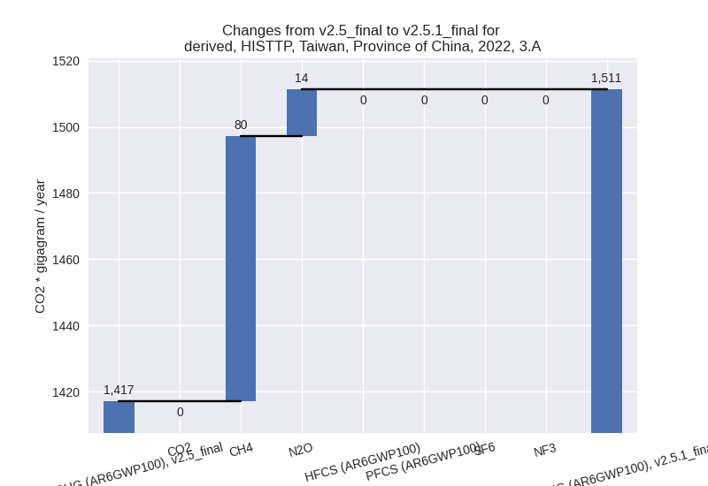
There is no subsector information available in PRIMAP-hist. - M.AG.ELV: Total sectoral emissions in 2022 are
2637.84 Gg CO2 / year which is 63.6% of category M.AG emissions. 2022
Emissions have changed by -36.5%
(-1516.96 Gg CO2 / year). 1990-2022 Emissions have changed by -9.2% (-335.55 Gg CO2 / year). For 2022
the changes per gas
are:
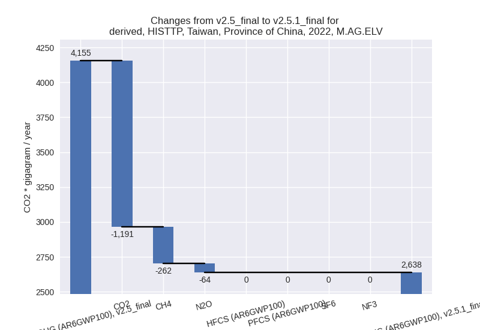
For 1990-2022 the changes per gas are:
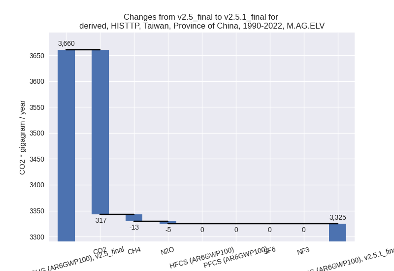
There is no subsector information available in PRIMAP-hist.
- 3.A: Total sectoral emissions in 2022 are 1511.29
Gg CO2 / year which is 36.4% of category M.AG emissions. 2022 Emissions
have changed by 6.6% (94.23 Gg CO2 /
year). 1990-2022 Emissions have changed by 0.2% (3.22 Gg CO2 / year). For 2022 the
changes per gas
are:
- 4: Total sectoral emissions in 2022 are 11767.27 Gg
CO2 / year which is 3.9% of M.0.EL emissions. 2022 Emissions have
changed by -8.3% (-1065.44 Gg CO2 /
year). 1990-2022 Emissions have changed by -0.3% (-32.29 Gg CO2 / year). For 2022 the
changes per gas
are:
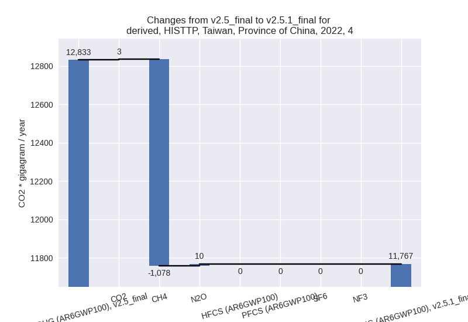 - 5: Total sectoral emissions in 2022 are 1050.41 Gg CO2 / year which is 0.3% of M.0.EL emissions. 2022 Emissions have changed by -0.5% (-4.86 Gg CO2 / year). 1990-2022 Emissions have changed by -0.0% (-0.15 Gg CO2 / year).